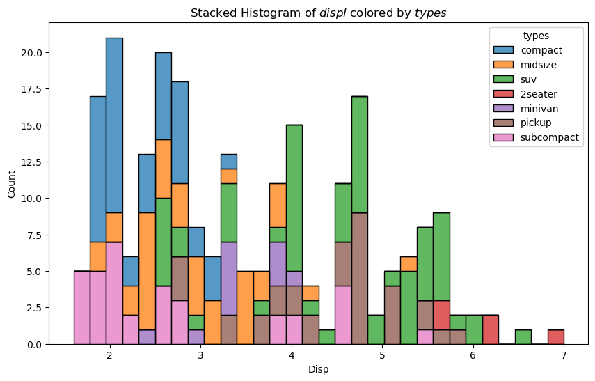
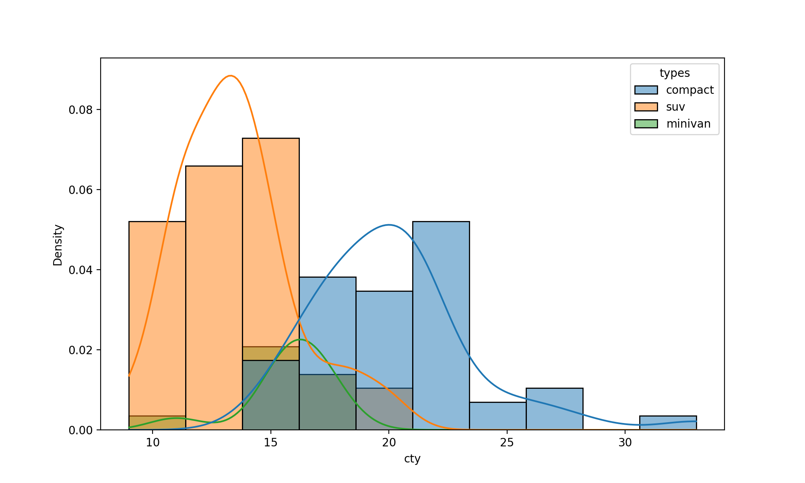
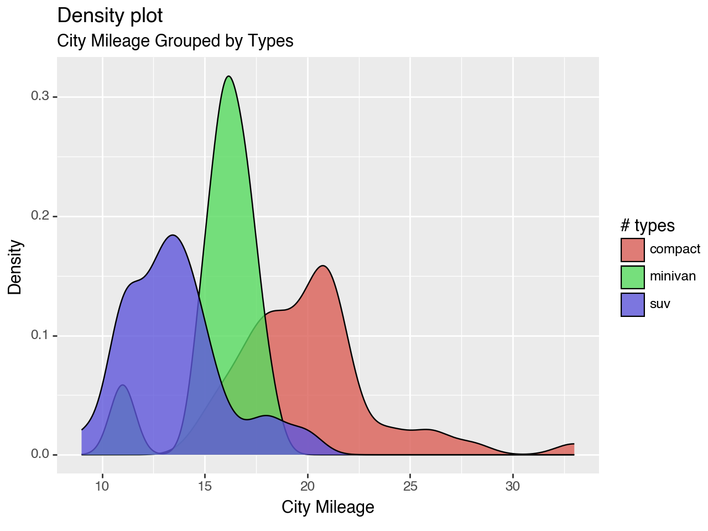
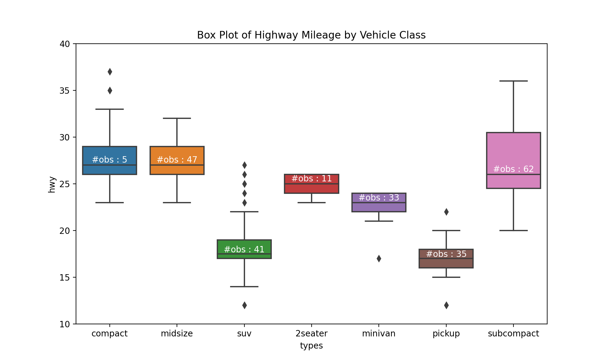
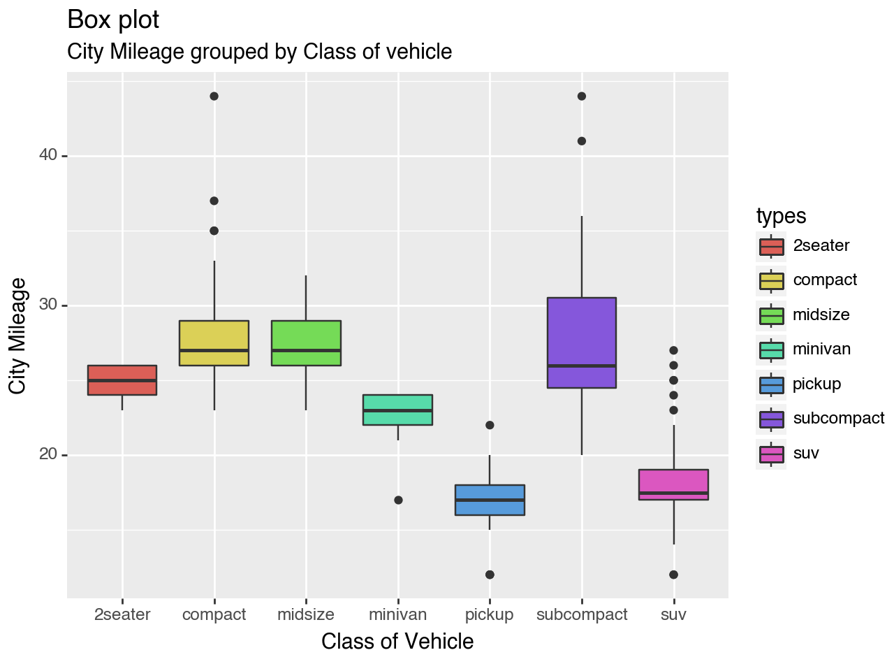
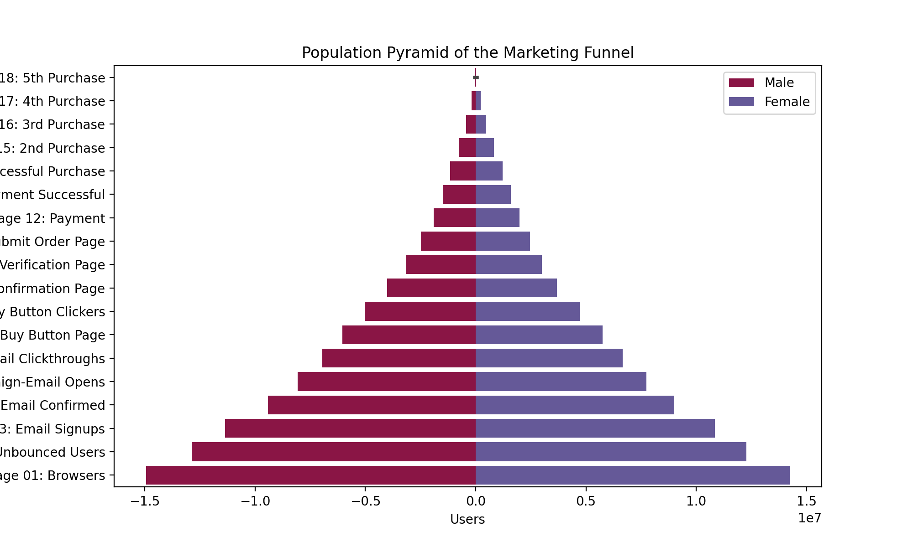

Distribution#
import matplotlib.pyplot as plt
import pandas as pd
import numpy as np
import seaborn as sns
from plotnine import *
Stacked Histogram#
mpg = pd.read_csv("data/mpg.csv")
mpg.rename(columns={"class": "types"}, inplace=True)
mpg.head()
| manufacturer | model | displ | year | cyl | trans | drv | cty | hwy | fl | types | |
|---|---|---|---|---|---|---|---|---|---|---|---|
| 0 | audi | a4 | 1.8 | 1999 | 4 | auto(l5) | f | 18 | 29 | p | compact |
| 1 | audi | a4 | 1.8 | 1999 | 4 | manual(m5) | f | 21 | 29 | p | compact |
| 2 | audi | a4 | 2.0 | 2008 | 4 | manual(m6) | f | 20 | 31 | p | compact |
| 3 | audi | a4 | 2.0 | 2008 | 4 | auto(av) | f | 21 | 30 | p | compact |
| 4 | audi | a4 | 2.8 | 1999 | 6 | auto(l5) | f | 16 | 26 | p | compact |
_, ax = plt.subplots(figsize=(10, 6))
x_var, group_var = "displ", "types"
sns.histplot(data=mpg, x=x_var, hue=group_var, bins=30, multiple="stack", ax=ax)
ax.set(
xlabel="Disp",
ylabel="Count",
title=f"Stacked Histogram of ${x_var}$ colored by ${group_var}$",
)
plt.show()

ggplot2 version#
(
ggplot(mpg, aes("displ"))
+ geom_histogram(aes(fill="types"), bins=30, color="black", size=0.3)
+ labs(
title=f"Stacked Histogram of ${x_var}$ colored by ${group_var}$"
)
)
---------------------------------------------------------------------------
AttributeError Traceback (most recent call last)
File ~/.conda/envs/kaggle/lib/python3.11/site-packages/IPython/core/formatters.py:708, in PlainTextFormatter.__call__(self, obj)
701 stream = StringIO()
702 printer = pretty.RepresentationPrinter(stream, self.verbose,
703 self.max_width, self.newline,
704 max_seq_length=self.max_seq_length,
705 singleton_pprinters=self.singleton_printers,
706 type_pprinters=self.type_printers,
707 deferred_pprinters=self.deferred_printers)
--> 708 printer.pretty(obj)
709 printer.flush()
710 return stream.getvalue()
File ~/.conda/envs/kaggle/lib/python3.11/site-packages/IPython/lib/pretty.py:410, in RepresentationPrinter.pretty(self, obj)
407 return meth(obj, self, cycle)
408 if cls is not object \
409 and callable(cls.__dict__.get('__repr__')):
--> 410 return _repr_pprint(obj, self, cycle)
412 return _default_pprint(obj, self, cycle)
413 finally:
File ~/.conda/envs/kaggle/lib/python3.11/site-packages/IPython/lib/pretty.py:778, in _repr_pprint(obj, p, cycle)
776 """A pprint that just redirects to the normal repr function."""
777 # Find newlines and replace them with p.break_()
--> 778 output = repr(obj)
779 lines = output.splitlines()
780 with p.group():
File ~/.conda/envs/kaggle/lib/python3.11/site-packages/plotnine/ggplot.py:114, in ggplot.__repr__(self)
110 def __repr__(self) -> str:
111 """
112 Print/show the plot
113 """
--> 114 figure = self.draw(show=True)
116 dpi = figure.get_dpi()
117 W = int(figure.get_figwidth() * dpi)
File ~/.conda/envs/kaggle/lib/python3.11/site-packages/plotnine/ggplot.py:224, in ggplot.draw(self, show)
222 self = deepcopy(self)
223 with plot_context(self, show=show):
--> 224 self._build()
226 # setup
227 figure, axs = self._create_figure()
File ~/.conda/envs/kaggle/lib/python3.11/site-packages/plotnine/ggplot.py:336, in ggplot._build(self)
333 layers.setup_data()
335 # Apply position adjustments
--> 336 layers.compute_position(layout)
338 # Reset position scales, then re-train and map. This
339 # ensures that facets have control over the range of
340 # a plot.
341 layout.reset_position_scales()
File ~/.conda/envs/kaggle/lib/python3.11/site-packages/plotnine/layer.py:479, in Layers.compute_position(self, layout)
477 def compute_position(self, layout: Layout):
478 for l in self:
--> 479 l.compute_position(layout)
File ~/.conda/envs/kaggle/lib/python3.11/site-packages/plotnine/layer.py:345, in layer.compute_position(self, layout)
343 params = self.position.setup_params(self.data)
344 data = self.position.setup_data(self.data, params)
--> 345 data = self.position.compute_layer(data, params, layout)
346 self.data = data
File ~/.conda/envs/kaggle/lib/python3.11/site-packages/plotnine/positions/position.py:79, in position.compute_layer(cls, data, params, layout)
76 scales = layout.get_scales(pdata["PANEL"].iat[0])
77 return cls.compute_panel(pdata, scales, params)
---> 79 return groupby_apply(data, "PANEL", fn)
File ~/.conda/envs/kaggle/lib/python3.11/site-packages/plotnine/utils.py:599, in groupby_apply(df, cols, func, *args, **kwargs)
595 lst = []
596 for _, d in df.groupby(cols):
597 # function fn should be free to modify dataframe d, therefore
598 # do not mark d as a slice of df i.e no SettingWithCopyWarning
--> 599 lst.append(func(d, *args, **kwargs))
600 return pd.concat(lst, axis=axis, ignore_index=True)
File ~/.conda/envs/kaggle/lib/python3.11/site-packages/plotnine/positions/position.py:77, in position.compute_layer.<locals>.fn(pdata)
75 return pdata
76 scales = layout.get_scales(pdata["PANEL"].iat[0])
---> 77 return cls.compute_panel(pdata, scales, params)
File ~/.conda/envs/kaggle/lib/python3.11/site-packages/plotnine/positions/position_stack.py:103, in position_stack.compute_panel(cls, data, scales, params)
98 return sc.trans
100 # Positioning happens after scale transformation and stacking
101 # only works well for linear data. If the scale is non-linear,
102 # we undo the transformation, stack and redo the transformation
--> 103 nl_trans = get_non_linear_trans(scales.y)
104 if nl_trans:
105 data = cls.transform_position(data, trans_y=nl_trans.inverse)
File ~/.conda/envs/kaggle/lib/python3.11/site-packages/plotnine/positions/position_stack.py:97, in position_stack.compute_panel.<locals>.get_non_linear_trans(sc)
94 from ..scales.scale import scale_continuous
96 if isinstance(sc, scale_continuous):
---> 97 if _is_non_linear_trans(sc.trans):
98 return sc.trans
File ~/.conda/envs/kaggle/lib/python3.11/site-packages/plotnine/positions/position_stack.py:87, in position_stack.compute_panel.<locals>._is_non_linear_trans(trans)
84 if tname.endswith("_trans"):
85 tname = tname[:-6]
86 return (
---> 87 trans.dataspace_is_numerical and tname not in linear_transforms
88 )
AttributeError: 'identity_trans' object has no attribute 'dataspace_is_numerical'
Density#
_, ax = plt.subplots(figsize=(10, 6))
sns.histplot(
data=mpg.query("types in ['compact', 'suv', 'minivan']"),
x="cty",
hue="types",
stat="density",
kde=True,
ax=ax,
)
plt.show()

ggplot2 version#
mpg_selected = mpg.query("types in ['compact', 'suv', 'minivan']")
(
ggplot(mpg_selected, aes("cty", fill="types"))
+ geom_density(alpha=0.8)
+ labs(
title="Density plot",
subtitle="City Mileage Grouped by Types",
x="City Mileage",
y = "Density",
fill="# types",
)
)

<Figure Size: (640 x 480)>
Box#
def add_n_obs(df, group_col, y) -> None:
medians_dict = {group[0]: group[1][y].median() for group in df.groupby(group_col)}
xticklabels = [x.get_text() for x in plt.gca().get_xticklabels()]
n_obs = df.groupby(group_col)[y].size().array
for (x, xticklabel), n_ob in zip(enumerate(xticklabels), n_obs):
ax.text(
x,
medians_dict[xticklabel] * 1.01,
f"#obs : {str(n_ob)}",
horizontalalignment="center",
fontdict={"size": "medium"},
color="white",
)
_, ax = plt.subplots(figsize=(10, 6))
sns.boxplot(x="types", y="hwy", data=mpg, notch=False, ax=ax)
add_n_obs(mpg, group_col="types", y="hwy")
ax.set(ylim=(10, 40), title="Box Plot of Highway Mileage by Vehicle Class")
plt.show()

ggplot2 version#
(
ggplot(mpg, aes("types", "hwy"))
+ geom_boxplot(aes(fill="types"), notch=False)
+ labs(
title="Box plot",
subtitle="City Mileage grouped by Class of vehicle",
x="Class of Vehicle",
y="City Mileage",
)
)

<Figure Size: (640 x 480)>
Pyramid#
email = pd.read_csv("data/email_campaign_funnel.csv")
email.head()
| Stage | Gender | Users | |
|---|---|---|---|
| 0 | Stage 01: Browsers | Male | -1.492762e+07 |
| 1 | Stage 02: Unbounced Users | Male | -1.286266e+07 |
| 2 | Stage 03: Email Signups | Male | -1.136190e+07 |
| 3 | Stage 04: Email Confirmed | Male | -9.411708e+06 |
| 4 | Stage 05: Campaign-Email Opens | Male | -8.074317e+06 |
group_col = "Gender"
order_of_bars = email.Stage.unique()[::-1]
_, ax = plt.subplots(figsize=(10, 6))
colors = [
plt.cm.Spectral(i / float(len(email[group_col].unique()) - 1))
for i in range(len(email[group_col].unique()))
]
for c, group in zip(colors, email[group_col].unique()):
sns.barplot(
x="Users",
y="Stage",
data=email.loc[email[group_col] == group, :],
order=order_of_bars,
color=c,
label=group,
ax=ax,
)
ax.set(
xlabel="Users",
ylabel="Stage of Purchase",
title="Population Pyramid of the Marketing Funnel",
)
ax.legend()
plt.show()

ggplot2 version#
(
ggplot(email, aes(x="Stage", y="Users", fill="Gender"))
+ geom_bar(stat="identity", width=0.6) # Fill column
+ scale_y_continuous(
breaks=np.arange(-1.5e7, 2e7, 5e6),
labels=[*np.arange(1.5, 0, -0.5)] + [*np.arange(0, 2, 0.5)],
)
+ coord_flip()
+ labs(title="Email Campaign Funnel")
+ theme(plot_title=element_text(hjust=0.5), axis_ticks=element_blank())
)
---------------------------------------------------------------------------
AttributeError Traceback (most recent call last)
File ~/.conda/envs/kaggle/lib/python3.11/site-packages/IPython/core/formatters.py:708, in PlainTextFormatter.__call__(self, obj)
701 stream = StringIO()
702 printer = pretty.RepresentationPrinter(stream, self.verbose,
703 self.max_width, self.newline,
704 max_seq_length=self.max_seq_length,
705 singleton_pprinters=self.singleton_printers,
706 type_pprinters=self.type_printers,
707 deferred_pprinters=self.deferred_printers)
--> 708 printer.pretty(obj)
709 printer.flush()
710 return stream.getvalue()
File ~/.conda/envs/kaggle/lib/python3.11/site-packages/IPython/lib/pretty.py:410, in RepresentationPrinter.pretty(self, obj)
407 return meth(obj, self, cycle)
408 if cls is not object \
409 and callable(cls.__dict__.get('__repr__')):
--> 410 return _repr_pprint(obj, self, cycle)
412 return _default_pprint(obj, self, cycle)
413 finally:
File ~/.conda/envs/kaggle/lib/python3.11/site-packages/IPython/lib/pretty.py:778, in _repr_pprint(obj, p, cycle)
776 """A pprint that just redirects to the normal repr function."""
777 # Find newlines and replace them with p.break_()
--> 778 output = repr(obj)
779 lines = output.splitlines()
780 with p.group():
File ~/.conda/envs/kaggle/lib/python3.11/site-packages/plotnine/ggplot.py:114, in ggplot.__repr__(self)
110 def __repr__(self) -> str:
111 """
112 Print/show the plot
113 """
--> 114 figure = self.draw(show=True)
116 dpi = figure.get_dpi()
117 W = int(figure.get_figwidth() * dpi)
File ~/.conda/envs/kaggle/lib/python3.11/site-packages/plotnine/ggplot.py:224, in ggplot.draw(self, show)
222 self = deepcopy(self)
223 with plot_context(self, show=show):
--> 224 self._build()
226 # setup
227 figure, axs = self._create_figure()
File ~/.conda/envs/kaggle/lib/python3.11/site-packages/plotnine/ggplot.py:336, in ggplot._build(self)
333 layers.setup_data()
335 # Apply position adjustments
--> 336 layers.compute_position(layout)
338 # Reset position scales, then re-train and map. This
339 # ensures that facets have control over the range of
340 # a plot.
341 layout.reset_position_scales()
File ~/.conda/envs/kaggle/lib/python3.11/site-packages/plotnine/layer.py:479, in Layers.compute_position(self, layout)
477 def compute_position(self, layout: Layout):
478 for l in self:
--> 479 l.compute_position(layout)
File ~/.conda/envs/kaggle/lib/python3.11/site-packages/plotnine/layer.py:345, in layer.compute_position(self, layout)
343 params = self.position.setup_params(self.data)
344 data = self.position.setup_data(self.data, params)
--> 345 data = self.position.compute_layer(data, params, layout)
346 self.data = data
File ~/.conda/envs/kaggle/lib/python3.11/site-packages/plotnine/positions/position.py:79, in position.compute_layer(cls, data, params, layout)
76 scales = layout.get_scales(pdata["PANEL"].iat[0])
77 return cls.compute_panel(pdata, scales, params)
---> 79 return groupby_apply(data, "PANEL", fn)
File ~/.conda/envs/kaggle/lib/python3.11/site-packages/plotnine/utils.py:599, in groupby_apply(df, cols, func, *args, **kwargs)
595 lst = []
596 for _, d in df.groupby(cols):
597 # function fn should be free to modify dataframe d, therefore
598 # do not mark d as a slice of df i.e no SettingWithCopyWarning
--> 599 lst.append(func(d, *args, **kwargs))
600 return pd.concat(lst, axis=axis, ignore_index=True)
File ~/.conda/envs/kaggle/lib/python3.11/site-packages/plotnine/positions/position.py:77, in position.compute_layer.<locals>.fn(pdata)
75 return pdata
76 scales = layout.get_scales(pdata["PANEL"].iat[0])
---> 77 return cls.compute_panel(pdata, scales, params)
File ~/.conda/envs/kaggle/lib/python3.11/site-packages/plotnine/positions/position_stack.py:103, in position_stack.compute_panel(cls, data, scales, params)
98 return sc.trans
100 # Positioning happens after scale transformation and stacking
101 # only works well for linear data. If the scale is non-linear,
102 # we undo the transformation, stack and redo the transformation
--> 103 nl_trans = get_non_linear_trans(scales.y)
104 if nl_trans:
105 data = cls.transform_position(data, trans_y=nl_trans.inverse)
File ~/.conda/envs/kaggle/lib/python3.11/site-packages/plotnine/positions/position_stack.py:97, in position_stack.compute_panel.<locals>.get_non_linear_trans(sc)
94 from ..scales.scale import scale_continuous
96 if isinstance(sc, scale_continuous):
---> 97 if _is_non_linear_trans(sc.trans):
98 return sc.trans
File ~/.conda/envs/kaggle/lib/python3.11/site-packages/plotnine/positions/position_stack.py:87, in position_stack.compute_panel.<locals>._is_non_linear_trans(trans)
84 if tname.endswith("_trans"):
85 tname = tname[:-6]
86 return (
---> 87 trans.dataspace_is_numerical and tname not in linear_transforms
88 )
AttributeError: 'identity_trans' object has no attribute 'dataspace_is_numerical'